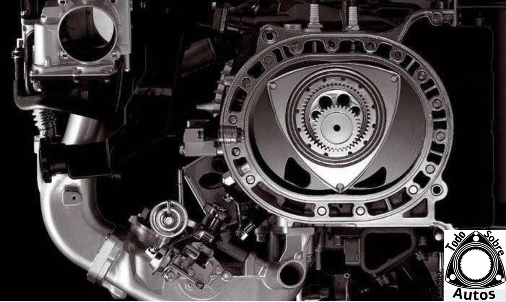
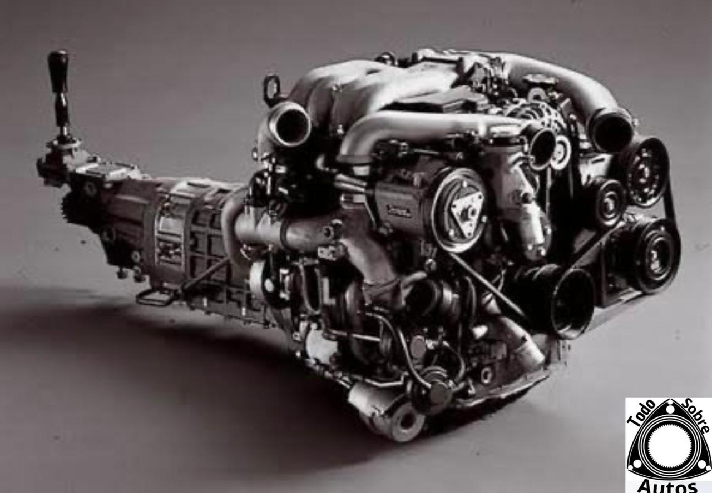
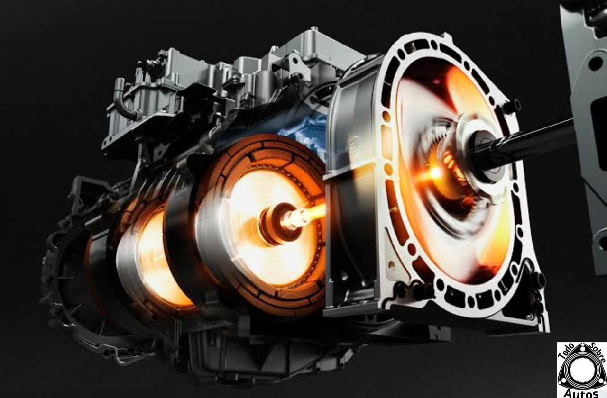
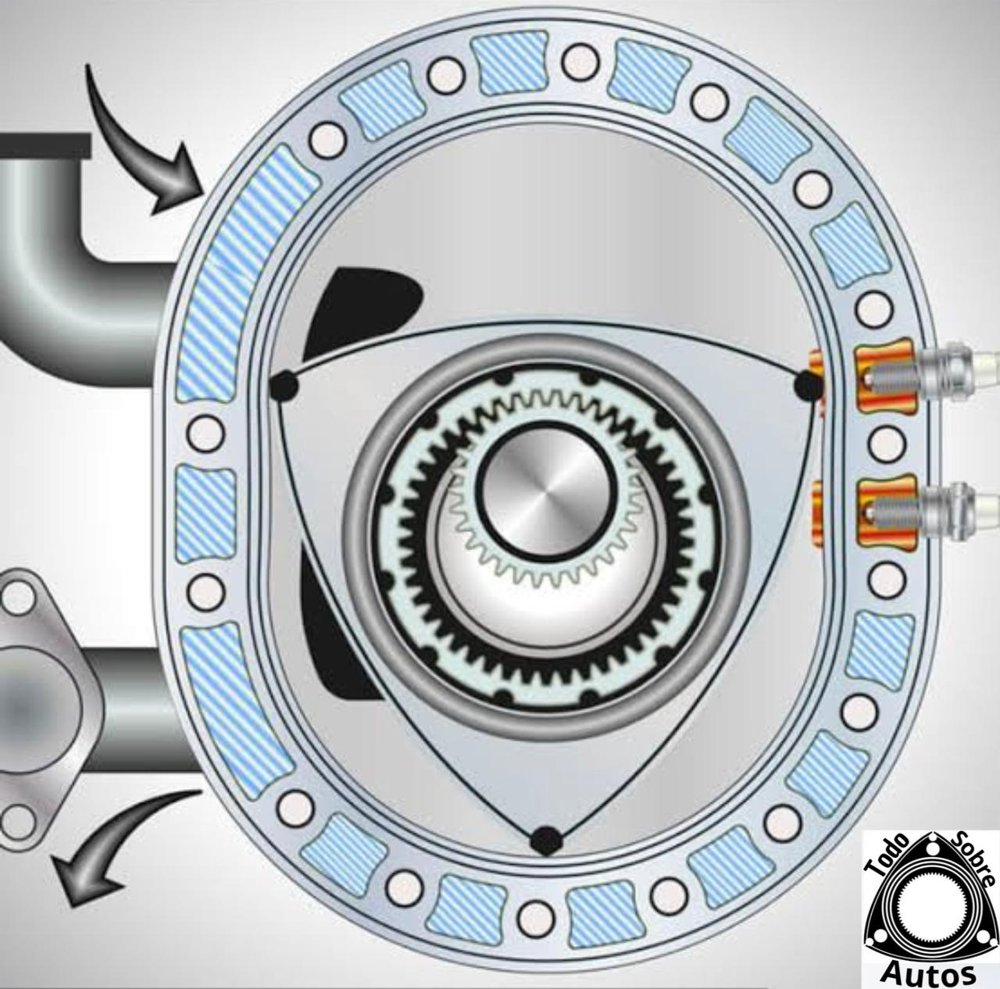

Los motores rotativo es un tipo de motor de combustion interna que utiiza un diseÒo de motor giratorio en lugarde pistones alternativos para convertir la energuia quimica en energuia mecanica. estos motores son conocidos por su alta potencia en relacion con
su tamano compacto y su suavidad de funcionamiento. uno de los
ejemplos mas famosos es el montor Wankel.
Caracteristicas del motor rotativo
Las caracteristics de los motores rotativos incluye su diseÒo compacto, alta relacion potencia, peso, suavidad
de funcionamiento debido a la falta de partes mòviles alternativas, altas RPM (revoluciones por minuto) y una
distribuciònde peso màs equilibrada en comparaciòn con los motores de pistòn convecionales. Sin embargo, tambièn
pueden tener mayores emisiones de gases de escape y un mayor consumo de aceite en comparaciòn con los motores
de pistòn.

El motor Wankel
El motor rotativo Wankel es un tipo de motor de combustión interna inventado por el ingeniero alemán Felix Wankel en la década de 1950. A diferencia de los motores de pistón convencionales, que utilizan un movimiento de vaivén lineal, el motor Wankel emplea un movimiento rotativo para convertir la energía química del combustible en energía mecánica.

Aspectos claves del motor wankel
Diseño: En lugar de pistones que se desplazan hacia arriba y hacia abajo en cilindros, el motor Wankel utiliza un rotor triangular (a veces llamado "rotor de Wankel") que gira dentro de una cámara de combustión de forma elipsoidal.
Funcionamiento: El rotor gira alrededor de un eje excéntrico dentro de una carcasa fija, creando tres cámaras de trabajo separadas dentro de la carcasa. Durante el ciclo de funcionamiento, estas cámaras se expanden y contraen alternativamente, capturando y comprimiendo la mezcla de aire y combustible, así como expulsando los gases de escape.
Simplicidad mecánica: El diseño del motor Wankel tiene menos partes móviles en comparación con los motores de pistón convencionales, lo que resulta en una construcción mecánica más simple y potencialmente menos mantenimiento.
Suavidad de funcionamiento: Debido a su funcionamiento rotativo, los motores Wankel tienden a ser más suaves y ofrecer menos vibraciones que los motores de pistón, lo que puede contribuir a una experiencia de conducción más refinada.
Peso y tamaño reducidos: En general, los motores Wankel son más compactos y ligeros que los motores de pistón equivalentes, lo que los hace atractivos para aplicaciones donde el espacio y el peso son críticos, como en aviones ligeros o en vehículos deportivos.
Aplicaciones: A lo largo de los años, los motores Wankel han encontrado aplicaciones en una variedad de industrias, incluyendo automóviles (como los modelos Mazda RX-7 y RX-8), motocicletas, motores estacionarios, vehículos aéreos no tripulados (drones) y hasta en aplicaciones espaciales.

control del motor rotativo en el pasado
El motor rotativo, también conocido como motor Wankel, desempeñó varias funciones importantes en el pasado, especialmente durante su apogeo en las décadas de 1960 y 1970. Aquí tienes un texto que destaca algunas de esas funciones históricas:
Durante las décadas de 1960 y 1970, el motor rotativo Wankel desempeñó un papel significativo en la industria automotriz y más allá. Su diseño innovador y sus características únicas lo convirtieron en una opción atractiva para una variedad de aplicaciones. Una de las principales funciones del motor rotativo fue su uso en vehículos deportivos y de alto rendimiento. Fabricantes como Mazda, NSU y otros lo adoptaron en modelos emblemáticos como el Mazda RX-7 y el NSU Ro 80. Estos automóviles destacaron por su suavidad de funcionamiento, potencia y diseño compacto, lo que los convirtió en favoritos entre los entusiastas del automovilismo y los conductores aficionados.
Además de su uso en automóviles de pasajeros, el motor rotativo encontró aplicación en otros ámbitos. En la aviación, por ejemplo, se utilizó en aviones experimentales y ultraligeros debido a su peso ligero y suavidad de funcionamiento. También se exploraron aplicaciones en vehículos militares y en la industria aeroespacial.
Otro aspecto destacado fue su uso en vehículos de competición, donde su capacidad para alcanzar altas velocidades de revoluciones y su respuesta rápida lo convirtieron en una opción popular en carreras de automóviles y motocicletas. En eventos como Le Mans y carreras de motocicletas de gran premio, los motores rotativos demostraron su potencial al competir con éxito contra motores de pistón convencionales.
Además, el motor rotativo también se utilizó en aplicaciones industriales y estacionarias, donde su diseño compacto y suavidad de funcionamiento eran ventajas importantes. En generadores eléctricos, bombas y equipos de construcción, los motores rotativos proporcionaban una solución eficiente y confiable.
En resumen, el motor rotativo Wankel tuvo un impacto significativo en una variedad de áreas en el pasado, desde la industria automotriz hasta la aviación y más allá. Aunque su popularidad ha disminuido en las últimas décadas debido a preocupaciones sobre la eficiencia del combustible y las emisiones, su legado perdura como un ejemplo de ingeniería innovadora y visión pionera.

Historia del motor rotativo
La historia del motor rotativo, también conocido como motor de pistón rotativo o motor Wankel, se remonta a mediados del siglo XX con el ingeniero alemán Felix Wankel como figura central en su desarrollo. Aquí tienes un resumen de los hitos más importantes en la historia del motor rotativo:
Orígenes de la idea: Felix Wankel comenzó a trabajar en el concepto de un motor rotativo en la década de 1920. Su visión era crear un motor sin partes móviles complejas, como las que se encuentran en los motores de pistón convencionales, que pudiera ofrecer una mayor eficiencia y simplicidad mecánica.
Patente del motor Wankel: En 1929, Wankel obtuvo su primera patente relacionada con un motor rotativo, aunque esta primera versión tenía diferencias significativas con el diseño final del motor Wankel que conocemos hoy en día.
Desarrollo durante la Segunda Guerra Mundial: Durante la Segunda Guerra Mundial, Wankel continuó desarrollando su concepto de motor rotativo, aunque su trabajo se vio obstaculizado por las condiciones de la guerra y la falta de recursos.
Colaboración con NSU: Después de la guerra, Wankel continuó perfeccionando su diseño y buscó socios para desarrollar su motor. En la década de 1950, estableció una colaboración con la compañía alemana NSU Motorenwerke AG.
Primeros prototipos funcionales: En la década de 1950, se construyeron los primeros prototipos funcionales del motor rotativo Wankel. Estos prototipos demostraron la viabilidad del concepto y atrajeron la atención de la industria automotriz y de ingeniería.
Patente fundamental de 1957: En 1957, Felix Wankel recibió una patente fundamental para su diseño de motor rotativo, que estableció las bases para el desarrollo futuro del motor.
Producción comercial: En 1960, NSU presentó el primer automóvil de producción equipado con un motor rotativo Wankel, el NSU Wankel Spider. Este fue el primer paso hacia la producción comercial de vehículos con motores rotativos.
Adopción por otros fabricantes: A lo largo de la década de 1960 y principios de la década de 1970, otros fabricantes de automóviles, como Mazda, comenzaron a explorar el uso del motor rotativo en sus vehículos. Mazda, en particular, se convirtió en el principal defensor y productor de motores Wankel.
Éxito y desafíos: Los motores rotativos Wankel ganaron popularidad debido a su suavidad de funcionamiento y diseño compacto. Sin embargo, también enfrentaron desafíos relacionados con la eficiencia del combustible, las emisiones y el sellado de las cámaras de combustión.
Declive y discontinuación: A pesar de su éxito inicial, la producción de vehículos con motores rotativos disminuyó gradualmente en las décadas de 1980 y 1990, principalmente debido a preocupaciones sobre la eficiencia del combustible y las emisiones. En 2012, Mazda discontinuó la producción de su último modelo con motor rotativo, el RX-8.
Aunque el motor rotativo Wankel no alcanzó la misma difusión que los motores de pistón convencionales, sigue siendo recordado como un hito en la historia de la ingeniería automotriz y como un ejemplo de innovación tecnológica audaz.